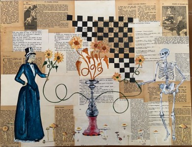

A exposição "loucura total" faz um apurado geral das obras do artista sousense Bruno Cesarino de Freitas, de 32 anos. Filho de comerciante, crescera dentro da loja de tintas do pai, onde teve o primeiro contato com as cores. Iniciara sua produção aos 19 anos, tendo hoje um acerco com mais de 150 obras produzidas.
Início
